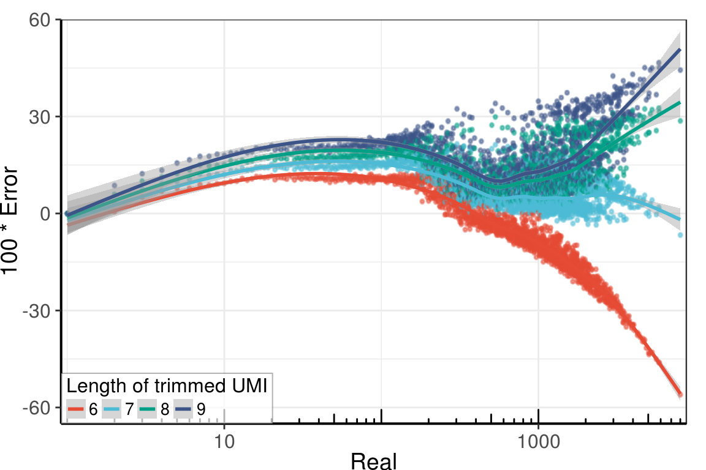
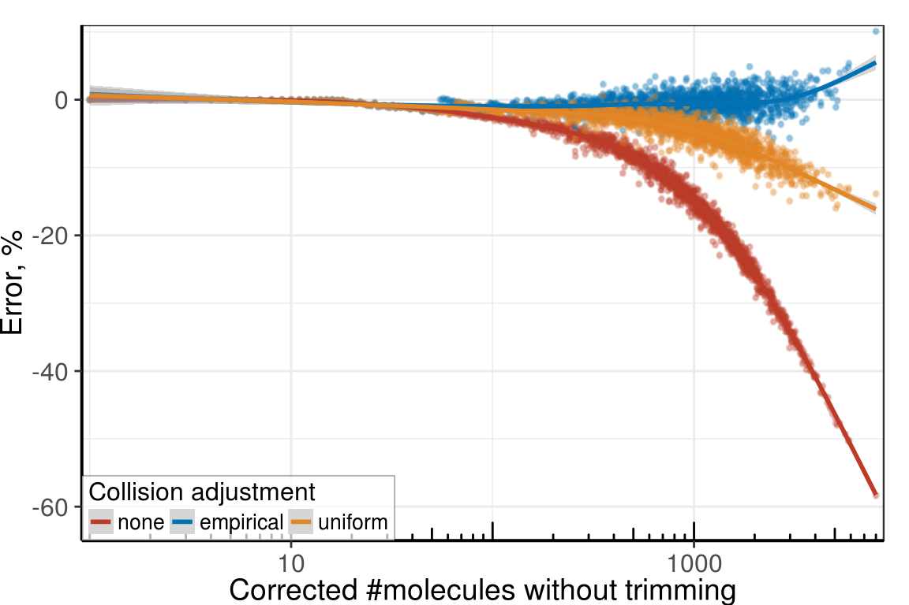
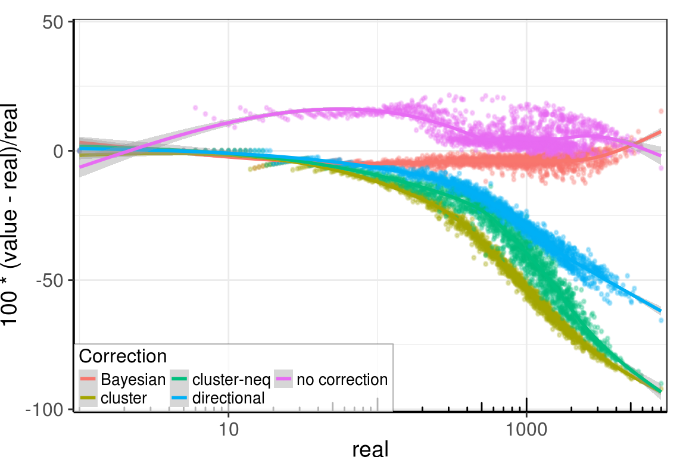
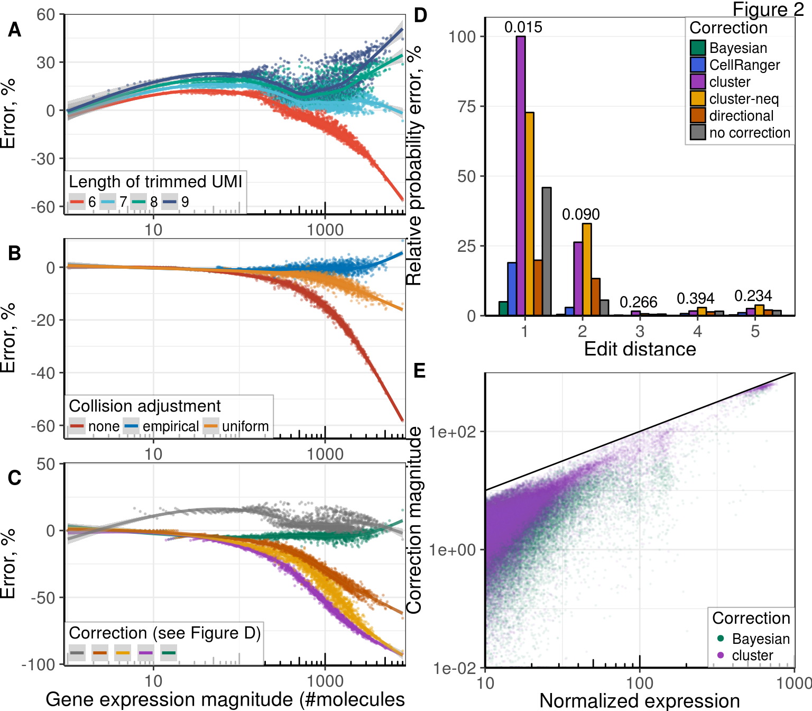

Main figure
umis_per_gene <- as.data.frame(lapply(trimmed, `[[`, 'umis.per.gene'))
colnames(umis_per_gene) <- paste0(kTrimmedLengths)
errors <- ((umis_per_gene - raw$filt_umis_per_gene_simple) / raw$filt_umis_per_gene_simple) %>%
cbind(Real=raw$filt_umis_per_gene_simple) %>%
melt(id.vars='Real', variable.name='UmiLength', value.name='Error')
errors_sum <- errors %>% group_by(Real, UmiLength) %>% summarise(Error=mean(Error, trim=0.2))Figure A
kPlotWidth <- 8
kPlotHeight <- 7
gp1 <- ggplot(errors_sum, aes(x=Real, y=100 * Error, color=UmiLength)) +
geom_point_rast(size=0.3, alpha=0.5, width=kPlotWidth / 2, height=kPlotHeight / 3) +
geom_smooth() +
scale_x_log10(expand=c(0.01, 0)) + annotation_logticks(sides='b') +
scale_y_continuous(limits=c(-65, 60), expand=c(0, 0)) +
theme_pdf(legend.pos=c(0, 0)) +
scale_color_npg() +
guides(color=guide_legend(title='Length of trimmed UMI', ncol=4))
gp1
Figure B
fig_umi_length <- 6
trimmed_corrected_cells <- lapply(raw$filt_reads_per_umi_simple, TrimUmis, fig_umi_length)umis_per_gene_plt <- data.frame(none=sapply(trimmed_corrected_cells, length),
real=raw$filt_umis_per_gene_simple)
umis_per_gene_plt$empirical <- trimmed[[fig_umi_length - 5]]$collisions.info[umis_per_gene_plt$none]
umis_per_gene_plt$uniform <- sapply(umis_per_gene_plt$none, AdjustGeneExpressionUniform,
4^fig_umi_length)
umis_per_gene_plt_df <- melt(as.data.frame(umis_per_gene_plt), id.vars='real',
variable.name='Adjustment', value.name='value')
umis_per_gene_plt_df <- umis_per_gene_plt_df %>% group_by(Adjustment, real) %>%
summarize(value=mean(value, 0.2))
gp2 <- umis_per_gene_plt_df %>%
ggplot(aes(x=real, y=100 * (value - real) / real, col=Adjustment)) +
geom_point_rast(size=0.3, alpha=0.3, width=kPlotWidth / 2, height=kPlotHeight / 3) +
geom_smooth() +
scale_x_log10(expand=c(0.01, 0)) + annotation_logticks(sides='b') +
scale_y_continuous(expand=c(0, 0), limits=c(-65, 11)) +
scale_color_nejm() +
labs(x='Corrected #molecules without trimming', y='Error, %') +
guides(color = guide_legend(title='Collision adjustment', ncol=3)) +
theme_pdf(legend.pos=c(0, 0))
gp2
Figure C
fig_umi_length <- 7
corrected_data <- as_tibble(trimmed[[fig_umi_length - 5]]$filt_cells)
colnames(corrected_data) <- c('Bayesian', 'cluster', 'cluster-neq', 'directional')
corrected_data$`no correction` <- trimmed[[fig_umi_length - 5]]$umis.per.gene
corrected_data$real <- raw$filt_umis_per_gene_simple
plot_df <- melt(corrected_data, id.vars='real', variable.name='Correction') %>%
group_by(Correction, real) %>% summarize(value=median(value))
gp3 <- ggplot(plot_df, aes(x=real, y=100 * (value - real) / real, color=Correction)) +
geom_point_rast(size=0.3, alpha=0.3, width=kPlotWidth / 2, height=kPlotHeight / 3) +
geom_smooth() +
scale_x_log10(expand=c(0.01, 0)) + annotation_logticks(sides='b') +
scale_y_continuous(limits=c(-101, 51), expand=c(0, 0)) +
# scale_color_manual(values=correction_colors[2:length(correction_colors)]) +
guides(color=guide_legend(ncol=3)) + theme_pdf(legend.pos=c(0, 0))
gp3
aml035_plots <- list(gp1=gp1, gp2=gp2, gp3=gp3)# You need to run "umi_correction/umi_bmmc1.Rmd" first to produce these plots
bmmc_plots_data <- readRDS('../../data/plot_data/bmmc_umi_fig_part2.rds')Complete figure
colors <- alpha(bmmc_plots_data$correction_colors, 0.7) %>%
setNames(names(bmmc_plots_data$correction_colors))
scale_color_short <- scale_color_manual(values=colors)
figure_trim <- plot_grid(
aml035_plots$gp1 + theme_pdf() + ylab('Error, %') + rremove("xlab") +
theme(plot.margin=margin(b=2, unit='pt')),
aml035_plots$gp2 + theme_pdf() + rremove("xlab") +
theme(plot.margin=margin(b=2, unit='pt')),
aml035_plots$gp3 + theme_pdf() + ylab('Error, %') + scale_color_short +
guides(color=guide_legend(title='Correction (see Figure D)',
label.theme=element_blank(), ncol=5, reverse=T)) +
rremove("xlab") + theme(plot.margin=margin()),
ncol=1, nrow=3, labels = c("A", "B", "C"), align='v')
figure_trim_ann <- (figure_trim + theme(plot.margin=margin(t=10, l=0, unit='pt'))) %>%
annotate_figure(bottom=text_grob("Gene expression magnitude (#molecules)", size=14,
hjust=0.43))fig_full <- plot_grid(figure_trim_ann + theme(plot.margin=margin()),
bmmc_plots_data$gg_fig + theme(plot.margin=margin()), ncol=2)
fig_full_ann <- annotate_figure(fig_full, fig.lab="Figure 2", fig.lab.pos="top.right")
fig_full_ann
ggsave(paste0(kPlotsFolder, 'umi_correction_figure.pdf'), fig_full_ann, width=8, height=7)